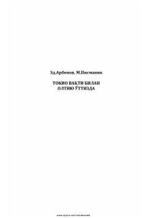

TVSovet razvedkasining Uzoq Sharqdagi faoliyati haqidagi tarixiy-sarguzasht asar.
Mazkur asar sovet разведкаси тарихи ва уларнинг фаолиятига бағишланган бўлиб, Узоқ Шарқдаги фронт чизиғидаги воқеаларни ҳикоя қилади. Совет контрразведкасининг япон милитаристларига қарши кураши ва мураккаб жараёнлар тасвирланган.